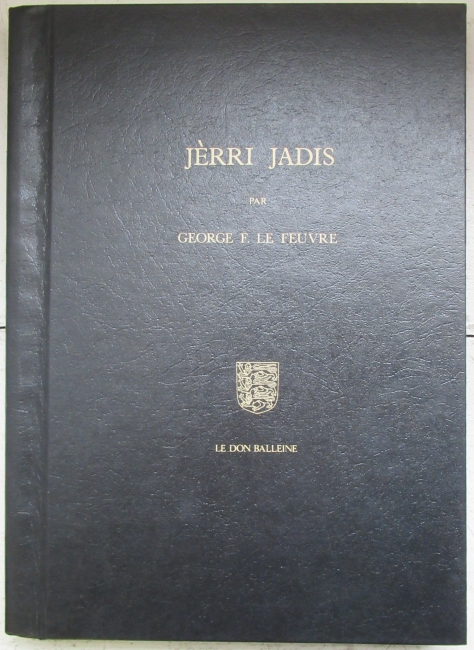
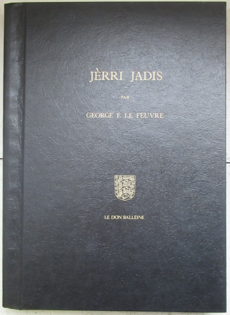
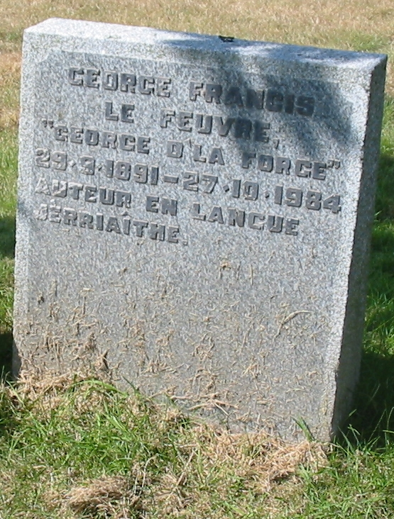

(29/9/1891 - 27/10/1984)

George d'la Forge 'tait probabliément l'pus grand auteu dé prose en Jèrriais du vîngtchième siècl'ye.
Il êcrivit pus d'mille articl'yes pouor les gâzettes. Ch'est eune véthitabl'ye trésor'rie d'la langue Jèrriaise: des mémouaithes d'la vie en Jèrri duthant ses jannes ans, ses expéthiences dans les difféthents pays tch'i' vîsitit duthant ses viages, les gens, les couôteunmes et les crianches du temps pâssé, et ses opinnions entouor la vie politique et les changements en Jèrri. Tchi grand travas!
L'amas et la qualité d'ses piéches aîdgaient à êtablyi l'St. Ouënnais coumme standard littéthaithe pouor l'Jèrriais.
Pouor dé mé, ch'tait ma preunmiéthe întroduction au Jèrriais - liêsant l's articl'yes tch'appathaîssaient rédguliéthement dans les colonnes d'la gâzette du sé quand j'tais mousse.
Nécrologie en Jèrriais
"George d'La Forge" n'est pus. Sén âme s'envolit pouor Lé Paradis lé 27 d'octobre, mil neuf chents huiptante-quatre. I' pâssit don l'pas à l'âge vénéthabl'ye dé nénante-trais ans.

Jèrriais absolûment r'mèrtchably'ye sus touos les sens, j' n'éthons janmais veu ni connu san patheil. Esprité et adèrt à un dégré, il avait monté au tout haut d' l'êtchelle en dêpit des grands d'savantages dé ses jannes ans et d'la duthe vie qué nou n'comprend pus au jour d'aniet. Car, étant bouon d'colyi, il avait seu s'mett' en longue graie et, auprès aver hèrchi eune bouonne brîtheûthe, avait labouothé à larges raies et draites bel et bein pouor des'th années, hors pays, faîthant enfin sa miclotte et s'èrtithant d' affaithes acouothe au janne âge dé 55 ans.
Comme dé raiethon, s'en r'vénant en Jèrri, tch'avait tréjous 'té s'n ambition avaû l'th années, i' s'y r'mînt à fouorche, à brâthilyi, entouor chennechîn et chenn'na, baillant un co d'main sus bein des vouaies et manniéthes ès'th uns et ès'th aut's pouor san pliaîthi.
Viageux par excellence, véthe viageux estraordinnaithe, i' pâssait chînq ou siex mais ichîn en Jèrri, s'en r'allant pouor l'hivé dans d'miyeu clyînmats et r'vaie ses gens - toute eune racachie dé fréthes et soeurs et lus d'scendants dans l'Nouvieau Monde. (Et né v'là comme tchi qu' les Jèrriais ont viédgi l'Île dé la vielle race!) Châque êté en Jèrri, il avait d'la peine à pouver aller r'vaie touos ses accoints, tant il en avait et tch'il 'tait învité siez ieux. I' s'pliaîthait à raconter entouor la vie du temps pâssé ichîn dans l'Île et, bein seux, entouor ses viages et ses aventuthes. Et, mais, tch'il en avait ieu, dé toutes les bénites sortes! Combein dé fais qué nou lî dîthait, dé s'mett' dêliêment à êcrithe tout ch'la bas et en faithe un gros livre.
Véthe, il avait rêussi hardi bein dans tout ch' tch'il avait entréprîns, car il 'tait d'la vielle trempe et n'tait pon sans p'tits boudîns dans la tête. Sorti du tchu des Landes, comme i' dîthait, à St.Ou, il avait tréjous leu l' ambition d'vaie les grands pays, comme tant d'aut's dé ses gens l'avaient fait d'vant li. Ayant pâssé l'travèrs dé la Grand' Dgèrre, né viyant qué d'la duthe et tout chein tch'était âffreux, i' s'fit un voeu qué si ch'est tch'il en r'sortait en vie sain et sauf, i' s'rappell'lait tréjous dé n aver à s'èrpliaindre janmais entouor les tracas d'la vie, dé rester content d'san sort et r'connaîssant pouor san crôtîn d'pain lé restant d'ses jours. Il a pâssé hardi dg'ieau lé tou d'La Corbiéthe dépis ilo ches trente-huit ans quand i' r'fit c'mîn pouor san p'tit pays. Et combein dé fais qu' nou r'a parcouothu et vressé ensembl'ye, li et mé, les vielles rues, les vièrs quémîns des Landes là-haut tch'il avait si bein connu - La Rue d'La D'vîthe, La Rue d'La Pointe, La Rue des Fouothets, La Rue Freûle , Lé Mathêtchet et tout l'restant! Et qué j'en avons viagi, li et mé et nous ensembl'ye, dans l'Île avaû l'th années quand il 'tait 'chîn en Jèrri! Ch'tait san grand pliaîthi d'êt' autant qu' pôssibl'ye auve un Jèrriais à côté d'li. Car il aimait sa vielle langue comme nulle aut' chôthe au Monde. Il en' 'tait entchéthinné. Et, avaû l'th années, quand i' s'rencontraient là-bas en Améthique, lé Fraînque san fréthe et li, i'd'vîthaient tréjous en Jèrriais.
Sans nul doute, George L'Feuvre a 'té un încompathabl'ye dé san temps, pouor nous et pouor d'aut's. Mais, ch'est bein cèrtain qué ch'tait nouot' fanmil'ye tchi l'avait connu l'mus, car i' dut pâsser la valeu dé bein d'th années auve nous entre ses viages, et nou vînt à s'entré-connaître parfaitement. Lé v'là don hors à san r'pos êtèrnel, et nou n' l'èrvèrra pus 'chîn-bas. I' vouos a êcrit des chents et des chents articl'yes, pouor la gâthette dite Jersey Evening Post - bein en d'ssus d'huit chents mille mots - et i' n' y'a quâthiment qu' li tch'a seu êcrithe lé bouôn Jèrriais comme i' faut. I' soulait même dithe tch'i' y'avait dangi tch'il abiêmîsse sa copie du Dictionnaithe Jèrriais tant tchi l'faîthait sèrvi. Aussîn, nus né l'ont connu mus qu'li.
Eh bein, George - nou t'étha dit " À la préchaine!" bein des fais, quand tu t'en r'allais ès Améthiques et ailleurs avaû l'th années dé d'pis la dgèrre. Mais chutte fais, dgia, nouot' vièr anmîn, ch'est bein la dreine et, comme tu nouos l'ramémouaithais tchiquefais, jusqu'au jour dé la Rêsurrection. I' n'est don pus béthoin dé t'souhaiter "Bouôn pid, bouon' yi, bouonne dent. . ." mais bel et bein Lé Paradis à la fin d'tes jours. Et véthe, j' t'èrvèrrons tchique bouôn jeu, pouor èrdévîther dé nouos vièrs temps en vièr Jèrriais. Ès aut's jours, man vi!


George d'La Forge prînt part dans des concèrts et des pièches dé thiâtre dans sa jannèche
Nécrologie en Angliais Death of George d'la Forge - the exiled Jerseyman who left his heart in St. Ouen AN exiled Jerseyman who became one of the foremost guardians of his Island's native language, Mr George Francis Le Feuvre, died in America on Saturday at the age of 93. Widely known as "George d'La Forge", the nom-de-plume under which he wrote over 900 Jersey Norman-French columns for this newspaper, Mr Le Feuvre was made a Membre d'Honneur of the Societe Jersiaise earlier this year. His ashes are to be flown home to the Island he loved and interred in St Ouen, where he was born on September 29, 1891, at La Forge, Millais, the family home from which he was to draw many of the memories and anecdotes which later enriched his column, "Eune Lettre du Bouanhomme George", the last of which, by coincidence, was published only on Friday. Although he made several trips back to Jersey, the extent of Mr Le Feuvre's achievement in protecting and promoting the language was all the more remarkable in that his work was carried out thousands of miles away in the USA, where he first lived in 1919 and where he had been a naturalised citizen for over 50 years. He returned to the Island in 1981, when the celebrations to mark his 90th birthday included being received by the Bailiff, who made a presentation on behalf of the States. Such accolades were a far cry from the harsh realities of Jersey life at the turn of the century which prompted his blacksmith father, also George, to emigrate to Gaspe in 1901 with his wife, formerly Miss Florence Giffard, and their two younger sons. The eldest son, George, stayed behind and, after being educated at St Ouen's Wesleyan School and La Moye School, went to work when barely 14 in the offices of Hill Street solicitor Mr William Binet, where he stayed until being appointed Commis Vicomte for the Police and Petty Debts Courts in 1914. He also acted as secretary to the Constable of St Peter, and served in the West Battalion of the Royal Militia of the Island of Jersey from 1908 until 1915. The future "George d'la Forge" enlisted in the Royal Field Artillery in 1916 and was posted to the Western Front, where he saw action in the battles of the Somme, Vimy Ridge, Messines Ridge and Cambrai and, in a happy moment among the horrors of the trenches, was reunited with his three brothers, one of whom had joined the British Army from Jersey and two of whom were with the Canadian forces. He was recommended for a commission and sent back to England, but the Armistice was declared before he could complete his training and he was demobilised in 1919, joining his family in Canada later that year, when he entered the Civil Service in Ottawa. Mr Le Feuvre was by then already a widower. His wife Marguerite, step-daughter of a French Army captain, had died in an influenza epidemic in 1918, two years after their marriage. Much later, the daughter of the marriage, Reine, joined her father in America. After three years in the Canadian Civil Service, Mr Le Feuvre went to seek his fortune in the United States and, starting as a labourer, began a successful career with the Great Lakes Engineering Works which ended with his retirement as an executive in 1946. He became a naturalised American in 1933. Although he remained in the USA, and one period of 20 years passed between his visits to his native Island, his enthusiasm for its language, affairs and people remained undimmed and his main activities in retirement were writing in and about Jersey Norman-French and recording Jersey history and its way of life and his early days. One of the most widely-travelled Jerseyman of his day, he also visited Jersey people in many parts of the world and later established a pattern by which he spent part of the year at his retirement home in Texas, and part at his family's St Ouen home, Le Menage ès Feuvres, Les Landes, which he restored to its original style. He became probably the most prolific writer of his native, and first language, matched only by the output of its lexicographer, Dr Frank Le Maistre. A remarkable memory and an intimate knowledge of the Island, coupled with an entertaining style, earned him a faithful readership for "Eune Lettre du Bouanhomme George" the 900th of which appeared in the JEP in August last year. Some of the columns served as the basis for his two books, the first ever to be published wholly in the Jersey language. (Note du rédacteu: Ches livres n'taient pon les preunmièrs publy'iés en Jèrriais, et i' n'sont pon entchiéthement en Jèrriais nitout! N'criyiz pon chein tch'ous liêsiz dans les gâzettes!) They were "Jèrri Jadis" (1973) and "Histouaithes et Gens d'Jèrri" (1976), published by Le Don Balleine and meticulously in keeping with the standard orthography laid down in Dr Le Maistre's monumental Dictionnaire Jersiais-Francais , in the preparation of which Mr Le Feuvre gave enthusiastic support and encouragement. He also wrote Jersey language versions of many hymns and contributed often to the quarterly bulletin of L'Assembliée d'Jerriais, a society dedicated to the preservation of the language which he helped found as secretary in 1951. The importance of Mr Le Feuvre's work was recognised outside Jersey by the award in 1974 of the Prix Litteraire du Cotentin. A High Church Anglican who delighted in church ritual, he took part in a celebratory Mass in St Ouen's Chapel in 1981, when he returned home for his 90th birthday, an anniversary also marked by a dinner given in his honour by Le Don Balleine. That celebration of the life and work of "Maît' George" included a toast to a fit and active man who took up flying an aeroplane at the age of 45 and, at 89, took to the skies in his grandson's glider. Some 2 ½ years after becoming a nonagenarian, he was one of the few Jerseymen ever to be made a Membre d'Honneur of La Société Jersiaise, which he joined in 1923. In the course of his long life, he was also a member of the Jersey Green Room Club, the National Trust for Jersey. La Césarée Lodge of the Ancient, Free and Accepted Masons and several other Masonic lodges, chapters and rites in Jersey and the USA. His love of the Church extended to the delight he took in taking part in a Gregorian Mass sung to the Coutances rite with his great friend, the Abbé Marcel-Lelégard as celebrant in the Abbaye de la Lucerne in Normandy whenever he visited that part of the world. A memorial service will be held at St Ouen for Mr Le Feuvre, who died at San Antonio, Texas, leaving a daughter, Mrs Reine Voigt, and two grandchildren, Mr Kenneth Voigt and Mrs Carole Bonny who lives in St Lawrence. To them and other members of the family, the Jersey Evening Post, proud to have been so long associated with such a memorable Jerseyman, offers its sympathy . JERSEY EVENING POST, Monday, October 29, 1984

Le Ménage ès Feuvres
 


|  |
George Francis Le Feuvre George d'La Forge 29.9.1891 - 27.10.1984 Auteur en langue Jèrriaîthe |
Îndex dé tchiques articl'yes par George d'la Forge
S'ou voulez trouver eune articl'ye par George d'la Forge, consultez chennechîn